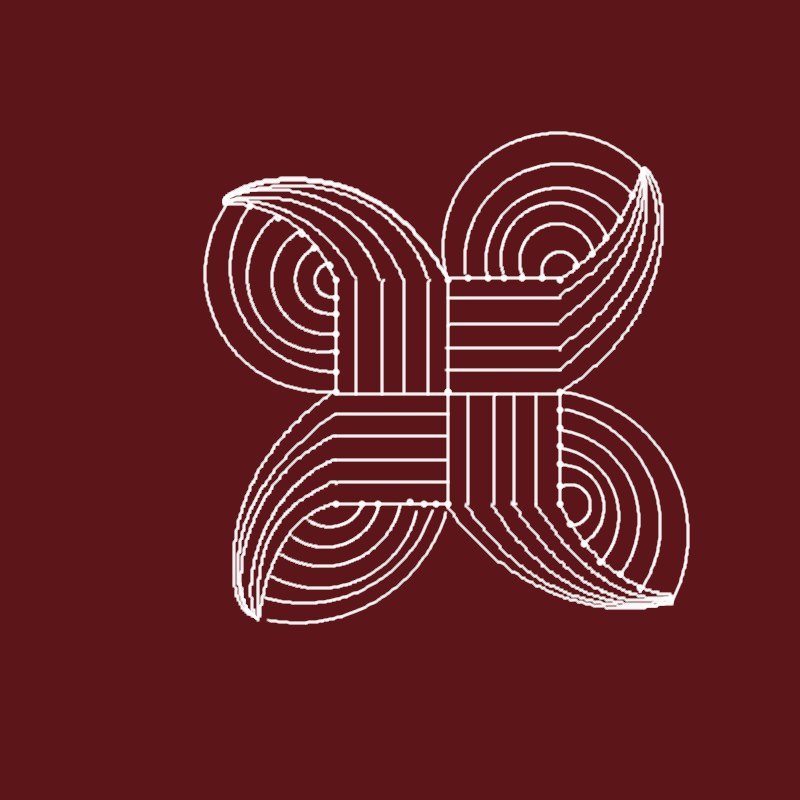
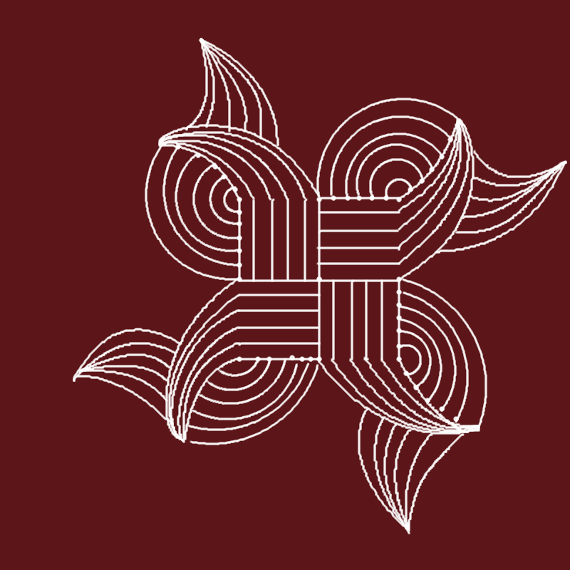
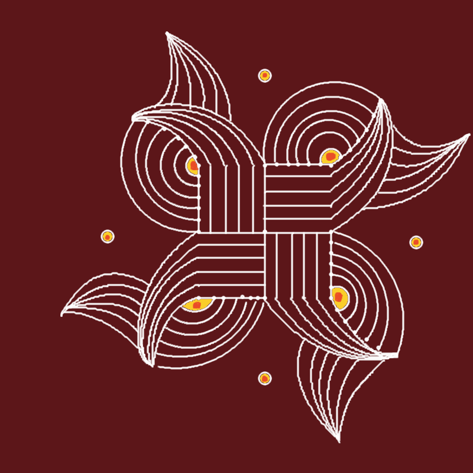

Padi refers to ‘steps’. The middle of a padi kolam resembles the steps of a temple pond. It is just straight lines extended as per design. This is popular among elders. They never drew sikku or pulli kolams. As women were neglected education in the earlier times, they had no legacy to learn sikku kolam which demands creativity. A home with sikku kolam in the 50’s and 60’s would mean that the woman is highly educated.